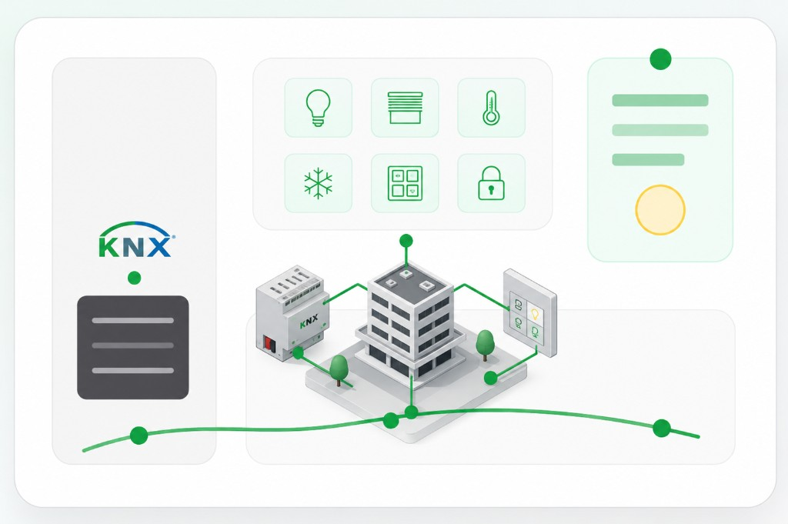

Hvor bruges KNX?
- Lys: tænd/sluk, dæmpning, scener.
- Solafskærmning: gardiner, persienner og markiser.
- Varme, ventilation og køling (HVAC).
- Adgang, alarm og energimåling.
- Visualisering og fjernbetjening fra panel/app.
Praktisk repetition, gruppeadresser og øvelser
Brug siden som arbejdsredskab til KNX, ETS, DALI og quiz/træning. Indholdet er delt op, så du kan vælge ét område ad gangen før praksis og skoleopgaver.

KNX
Fakta og begreber, der er gode at have i baghovedet, før du arbejder videre med ETS, DALI eller praktisk installation.
Hvad er KNX
KNX er en international, producentuafhængig standard (ISO/IEC 14543-3) til styring af bygninger. Tryk, sensorer, aktuatorer og gateways fra forskellige fabrikater kan tale sammen på den samme bus, så lys, varme, ventilation, solafskærmning og visualisering kan samles i ét anlæg.
Enheder står ikke og spørger hinanden hele tiden. De sender et telegram, når noget sker: et tryk aktiveres, en sensor måler en ændring, eller en aktuator melder status tilbage. Det giver en rolig bus, hvor kun relevant information sendes.
På TP sendes telegrammer med 9.600 bit/s (ca. 104 µs pr. bit). Bussen bruger CSMA/CA: enheder lytter før de sender, og hvis to sender samtidig vinder den med logisk 0 (dominant). Et almindeligt switch‑telegram med kvittering tager kun ca. 20 ms.
KNX startede i 1990 i Bruxelles som EIB Association med 15 producenter. I 1999 fusionerede EIBA med BCI (Frankrig, Batibus) og EHSA (Holland, EHS), og i 2006 blev navnet ændret til KNX Association. KNX er bagudkompatibel med EIB.
KNX-topologi
Tænk KNX som et el-anlæg med niveauer. Backbone ligger øverst, områder hænger på, hovedlinjen fordeler i området, og de almindelige linjer går ud til enhederne.
15.15.255 (koblere/IP‑routere: 15.15.0).224.0.23.12.I KNX-materialet skelnes der skarpt mellem hvor en enhed sidder i topologien (individuel adresse) og hvilken funktion telegrammer hører til (gruppeadresse). Efter idriftsættelse er det især gruppeadresser, der bruges i normal drift.
KNX Basic bruger faste synonymer mellem undervisningstekst og ETS:
A.L.B, fx 1.1.12).Bruges primært til kommissionering og diagnose: ETS sender programmeringstelegrammer til netop den enhed. Analogi fra materialet: som et brev adresseret til én bestemt person med navn og adresse.
A.L.B: område 0–15, linje 0–15, enhed 0–255.A=0: enheder på backbone-linjen. L=0: områdets hovedlinje. B=0: linjekobleren på den linje.15.15.255 (alm. enheder), 15.15.0 (koblere og IP-routere).Bruges i normal drift mellem sensorer, aktuatorer og logik: samme funktion (fx „lys lokale 406 tænd/sluk“) deler én gruppeadresse. Analogi: som masseudsendelse til alle, der er tilmeldt samme adresse.
0/0/0 er reserveret til broadcast (bl.a. tildeling af individuel adresse).Tænk „indenfra og ud“: først det fysiske segment med enheder, derefter hvordan linjer samles til et område, og til sidst backbone mellem områder (eller IP som hurtig rygrad).
Det mindste topologi-trin på TP: alle enheder på samme segment kan tale direkte med hinanden. Hvert segment skal have egen strømforsyning med drossel. Kabler kan fordeles som stjerne, linje eller træ – ring er ikke tilladt.
I moderne anlæg (TP‑256) typisk op til 256 busenheder på samme TP‑linje (alle segmenter på linjen tælles med); pr. linjesegment gælder stadig bl.a. 1.000 m samlet kabel og egen PSU. Skal ét logisk segment strække sig ud over 1.000 m, bruges op til tre linjeforstærkere (fire segmenter). Ældre anlæg (før 2019) brugte ofte 64 enheder pr. segment – bland ikke reglerne.
Hvis ét segment ikke rækker, forbindes op til 15 underlinjer til områdets hovedlinje
(linje 0 i området, fx 1.0) via linjekoblere. Hver linje og hovedlinjen har egen PSU.
Et område kan rumme over 4.000 enheder. Linjeforstærkere må ikke sidde på hovedlinjen.
Backbone-linjen er 0.0 (område 0, linje 0). Op til 15 områder kobles på via
områdekoblere (backbone couplers). Backbone har også egen PSU. Et fuldt TP-net kan skaleres til
over 61.000 enheder.
Backbone kan være TP eller erstattes/understøttes af KNXnet/IP (hurtigere, multicast 224.0.23.12).
Linje-, backbone- og segmentkoblere har en portfunktion (gate): de videresender kun gruppeadresser, som ETS har lagt i deres filtertabel – mindre unødig trafik. De har galvanisk adskillelse mellem primær og sekundær side (fx hovedlinje ↔ underlinje, eller IP ↔ TP).
Linjeforstærkeren har ingen filtertabel og sender alle telegrammer videre; den bruges til længde/forstærkning, ikke til at adskille funktioner.
Hvert telegram starter med hop count 6; hver kobler/forstærker trækker 1 fra, indtil 0 – så undgås uendelige kredsløb.
Bogstavkoderne er engelske, som på KNX‑diagrammer og i stand – så I kan slå dem op direkte. Forklaringerne er på dansk.
En busenhed kan dække én eller flere roller (fx tryk med LED):
Et gruppeobjekt er et lagersted i enheden, der forbinder applikationen med bussen. Størrelsen sættes af producenten (typisk 1 bit … op til 14 byte til fx tekst).
ETS tillader kun at linke objekter med samme størrelse til samme gruppeadresse – fx 1-bit tryk til 1-bit relæudgang.
DPT beskriver, hvordan nyttedata skal fortolkes, så enheder fra forskellige fabrikater forstår hinanden
(fx 1.001 switch, 3.007 relativ dæmpning, 5.001 skalering 0–100 %, 9.001 temperatur).
Flere standard-DPT’er kan indgå i et funktionsblok (fx dæmpning: switch + relativ + absolut værdi). Producentens navne på objekter kan variere – det er DPT og link, der afgør, om det virker sammen.
Flags styrer, hvordan objektet må bruge bussen. Producentens forvalg bør kun ændres, når du har en konkret grund (fx slå Read fra på persienne‑objekter, så et Read‑telegram ikke utilsigtet stopper eller starter kørslen).
Selv uden C sendes der stadig kvittering (ack) på telegrammer – men objektet kommunikerer ikke aktivt som tilsigtet.
Bruger trykker, sensor registrerer eller logik ændrer værdi.
Et kommunikationsobjekt sender et telegram med værdi og DPT.
Telegrammet sendes til alle enheder, men kun relevante objekter reagerer.
Relæ, dæmper, ventil eller gateway udfører funktionen og kan sende status.
KNX‑telegrammer kan sendes via flere medier i samme anlæg. Mediekoblere binder medierne sammen, og det medie en enhed bruger fremgår af produktmærkningen.
RF Multi har fast (F) og slow (S) kanaler. Hurtige kanaler bruges fx til lys (F = 16,4 kbps), langsomme til varme/køling, hvor batterilevetid er vigtig. ETS vælger automatisk den rigtige kanal ud fra afsender og modtager. RF Multi understøtter KNX Secure (autentifikation, kryptering, sekvensnumre).
KNX
Typiske grænser for twisted-pair (busledning), som I bruger på TEC. Tal kan afvige efter medietype og producent – brug altid datablad og jeres installationsgrundlag.
Det grønne kabel er KNX TP-bussen. Om kablet kaldes linje, hovedlinje eller backbone afhænger af placeringen i topologien. I små øveanlæg har du ofte kun én almindelig linje.
PSU 30 V → grønt KNX TP-kabel → tryk / sensor / aktuator
Her kabler du normalt bare én almindelig KNX-linje. Det er den type opstilling, man ofte møder på skolebordet.
Backbone → områdekobler → hovedlinje → linjekobler → almindelig linje → enheder
Backbone er et topologi-niveau. Det kan være fysisk KNX-kabel eller KNX/IP, men det er ikke bare det første grønne kabel i installationen.
Én betydning pr. linje – scroll roligt ned mellem sektionerne.
Hver regel står for sig. De to regler med 700 m gælder forskellige målepunkter – læs overskriften og „mellem hvem“.
Alt KNX TP-kabel lagt sammen på samme segment må typisk ikke overstige 1000 m.
Den længeste vej langs bussen fra den relevante strømforsyning (PS/PSU) til den enhed, der ligger længst væk.
Den største afstand målt langs bussen mellem to DVC – ikke det samme som LC→LR-reglen.
Gælder strækket fra LC til den første LR på den pågældende parallelgren – som på jeres tegning.
Kræver minimumsafstand efter producent (undervisning: ofte „mindst ca. 200 m“). Uden korrekt afstand kan forsyningerne påvirke hinanden.
Flere LR på samme linje skal typisk parallelkobles til linjekobleren (LC), så de alle har direkte forbindelse til LC – ikke kun serielt LR → LR som eneste kæde.
Ved blotlagte enkelte ledere: typisk mindst 4 mm afstand mellem KNX-leder og 230 V-leder – eller samme isolationsklasse. Har det ene kabel fuld ydre kappe, gælder andre scenarier (se jeres figur om installation af kabler).
Udfyld kun de felter, du har målt. Tryk „Tjek tal“ – ét felt ad gangen er helt fint.
Test dig selv
Du skal kontrollere længste stræk fra strømforsyning til fjerneste enhed.
Rigtigt svar: Typisk maks. 350 m fra den relevante strømforsyning (PS/PSU) til fjerneste enhed på segmentet.
KNX
Skabelon til dokumentation og kvalitetssikring – afkryds undervejs (gemmes lokalt i din browser).
ETS
Praktisk overblik over det, du typisk gør i ETS: opretter struktur, adresserer enheder, laver gruppeadresser, linker kommunikationsobjekter og downloader til anlægget.
Test dig selv
Hvilken forklaring passer bedst til en gruppeadresse i KNX/ETS?
Rigtigt svar: Gruppeadressen samler de objekter, der skal sende og modtage samme funktion.
Vælg KNX TP, navngiv projektet og opret bygning, etager, rum og tavler så projektet matcher installationen.
Importér produktdatabase fra producenten, og placer tryk, sensorer, aktuatorer, strømforsyning og gateways i den rigtige struktur.
Brug fx 1.1.12: område 1, linje 1, enhed 12. Adressen identificerer enheden på bussen og bruges ved programmering/diagnose.
Gruppeadresser fungerer som elektroniske samlemuffer: flere kommunikationsobjekter mødes på samme adresse, så de kan sende og modtage samme funktion.
Forbind trykkets sendeobjekt med aktuatorens modtageobjekt på samme gruppeadresse. Datapunkttypen skal passe til funktionen.
Download fysisk adresse og applikation, test funktionen i rummet, og kontrollér status/telegrammer hvis noget ikke virker.
3-niveau gruppeadresse
4/0/1 bygges op i ETSI undervisningen beskrives gruppeadresser som tre niveauer: Hovedgruppe, Mellemgruppe og Gruppeadresse. Navnene skal give mening for den næste, der overtager projektet.
4/0/1 kan læses som
4. sal → lys/relæ-tændinger → lokale 406A/B tænd/sluk udgang 1. ETS giver mulighed for
32 hovedgrupper (0–31), 8 mellemgrupper (0–7) og
256 undergrupper (0–255). 0/0/0 er reserveret til broadcast,
så der er 65.535 brugbare gruppeadresser. ETS understøtter også 2‑niveau (hovedgruppe / undergruppe 0–2047).
1.1.12.4/0/1.1.xxx.Test dig selv
Du har ændret gruppeadresselinks på en aktuator i ETS. Hvad er næste praktiske skridt?
Rigtigt svar: Link- og parameterændringer skal downloades som applikation, før enheden virker efter den nye opsætning.
Scenarietræning
Arbejd trin for trin: find først funktionen, derefter hvem der sender og modtager, og vælg til sidst den gruppeadresse og DPT der passer til objektet.
Scenarie: Det venstre tryk skal tænde/slukke udgang 1 på Hager-relæet i lokale 406A/B. Hvilken gruppeadresse og datapunkttype passer bedst?
ETS
Klik dig igennem typiske ETS- og KNX-fejl: forkert gruppeadresse, forkert DPT, manglende download, status der ikke vises eller problemer på buslinjen.
DALI
Praktisk side om hvordan KNX kan styre lys via DALI: bus, gateway, grupper, scener, fejlpunkter og daglysregulering.
Kort oversigt til undervisning – følg altid leverandørmanual og projekt for den konkrete installation (KNX‑gateway, DALI‑bus, armaturtyper).
DALI (Digital Addressable Lighting Interface) er en digital standard til styring af belysning: dimring, grupper, scenarier og fejlstatus ud til armaturdrivere og sensorer – adskilt fra den kraftige 230 V‑forsyning.
DALI‑2 er den udvidede generation under IEC 62386. Den er tænkt til bedre gensidig drift mellem produkter fra forskellige leverandører (certificering), flere enhedstyper og udvidet funktionalitet – stadig med bagudkompatibilitet til klassisk DALI, hvor det er understøttet.
| Emne | DALI (klassisk) | DALI‑2 |
|---|---|---|
| Standard / interoperabilitet | Ofte én master pr. bus; begrænset udvalg af inputs | Multi‑master muligt; certificerede enheder efter IEC 62386 |
| Enheder | Primært drivere og basale input | Også fx knapper, sensorer m.m. som separate bus‑profiler |
| Projektering | Kendte begrænsninger pr. fabrikat | Mere ensartet datamodel – stadig læs datablad |
Daglysregulering betyder typisk, at kunstlys dimmes op/ned efter hvor meget dagslys der allerede er i zonen – målt med en lux‑ eller fotosensor, og styret mod et ønsket lysniveau på arbejdsplane (eller tilsvarende referencepunkt).
Tip til modulet: Forbind DALI/DALI‑2 og daglys til jeres mål om regulering og energioptimering – og til grafiske brugerflader hvor lyszoner vises og evt. fejl meldes tilbage til drift.
Slideren simulerer udelys. Kun vindueszonen er på denne daglysregulering: jo mere udelys, jo mere dæmpes kunstlyset (svagere glød). De to andre lamper er andre zoner og forbliver næsten uændret – som når sensoren ikke styrer dem på samme måde.
En KNX-DALI gateway er broen mellem KNX-gruppeadresser og DALI-armaturer. KNX bestemmer typisk funktionen; DALI udfører lysstyringen på armaturerne.
Sender telegram på fx 4/0/1.
Oversætter KNX-funktion til DALI-gruppe, scene eller adresse.
Sender kommando til driverne på DALI-linjen.
Tænder, slukker, dæmper eller kalder scene.
Brug denne del som huskeliste, når du skal forstå eller teste en lysfunktion i et KNX/DALI-projekt.
Et tryk skal tænde/slukke en gruppe armaturer. Find ud af om KNX-adressen går til gatewayens gruppeobjekt, og om gatewayen peger på den rigtige DALI-gruppe.
Kort tryk tænder/slukker, langt tryk dæmper. Tjek at der er separate objekter og gruppeadresser til switch og relativ dæmpning.
En scene kan fx sætte flere armaturer til bestemte niveauer. Tjek både KNX-sceneobjekt og om scenen er gemt/programmeret i DALI/gatewayen.
Hvis et armatur ikke reagerer: tjek DALI-adresse, gruppe, driverforsyning, DALI-bus og om gatewayen melder lampe-/driverfejl.
Miniøvelse
Scenarie: Trykket sender korrekt på 4/0/1, og du kan se telegrammet i ETS Group
Monitor. Alligevel tænder armaturgruppen ikke. Hvad vil du kontrollere først?
Quiz/træning
Øvelsesmateriale til repetition – ikke den officielle KNX-basisprøve.
| Dansk | English | Kort note |
|---|